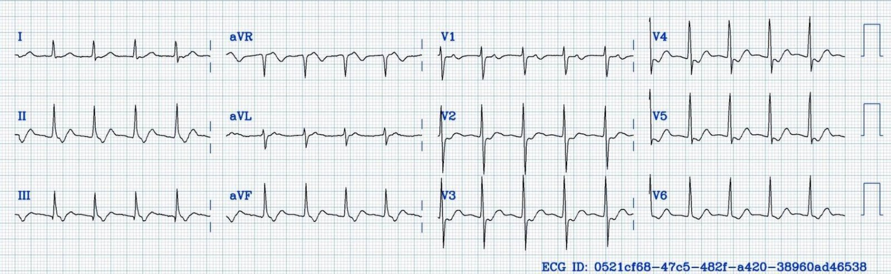
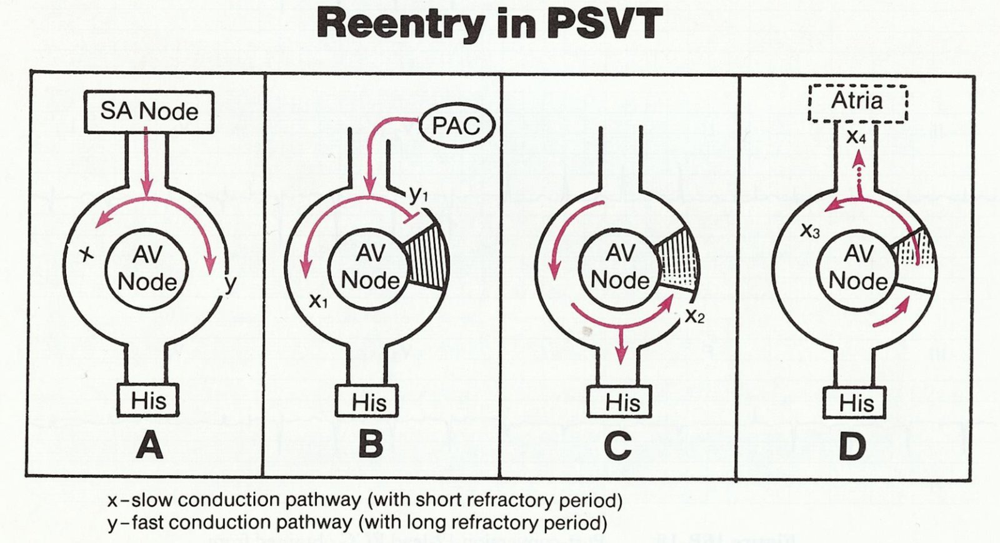
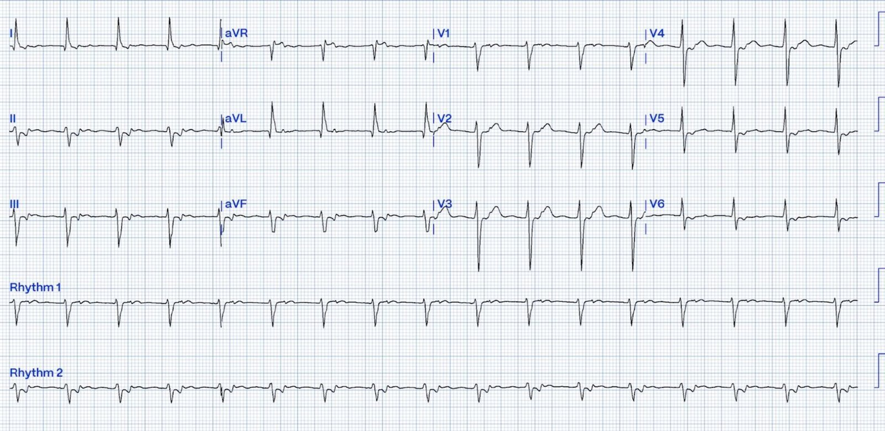
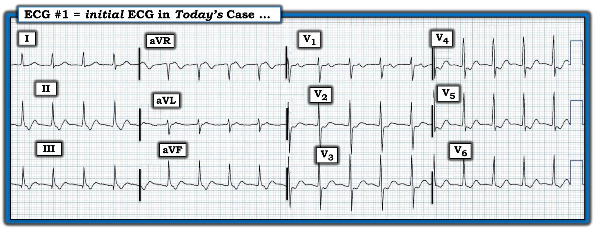
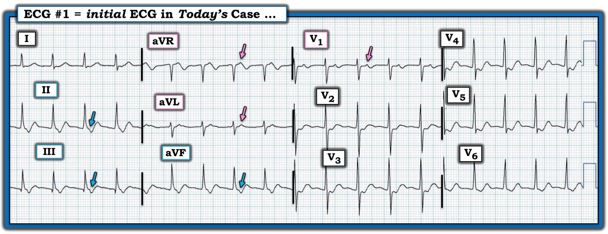

30/04/2025 — Đây là nhịp gì? Và chúng ta nên xử trí nó ra sao?
Bản dịch tiếng Việt của bài "What is this rhythm? And what should we do about it?" – Dr. Smith’s ECG Blog. Giữ nguyên toàn bộ 6 hình ảnh của bản gốc.
Bài này do Hans Helseth viết, cùng Ken Grauer, và có chút giúp đỡ của Smith
Không có bất kỳ thông tin nào về bệnh nhân, bạn sẽ diễn giải nhịp này như thế nào?


Đây là một nhịp trên thất. Có nhịp nhanh QRS hẹp đều với tần số 118 nhịp/phút (BPM) và trục bình thường.
Dưới đây là phần bàn luận dài về chẩn đoán nhịp này. Nhưng những người làm Cấp cứu như chúng tôi không phải lúc nào cũng cần biết chẩn đoán, mà chỉ cần biết phải làm gì. Về điều đó, xem phần cuối cùng của bàn luận.
Hoạt động nhĩ có thể không thấy ngay, nhưng quan sát kỹ các chuyển đạo dưới sẽ thấy sóng P âm ẩn trong đoạn ST. Ở V1 cũng thấy những sóng P dương nhỏ, tần số cao. Có thể suy ra đây là sóng P chứ không phải một phần của phức bộ ST-T, vì chúng có tần số cao. Sóng T thường có sườn lên và sườn xuống mượt hơn, còn sóng P có thời gian ngắn hơn và trông “sắc” hơn trên điện tâm đồ.
Sóng P âm ở các chuyển đạo dưới gợi ý rằng tâm nhĩ đang được khử cực bởi một mặt sóng đi về phía đáy tim (từ dưới lên trên; trớ trêu thay, “đáy” tim lại là phần ở trên!). Điều này chỉ có thể xảy ra trong nhịp nhĩ thấp hoặc do dẫn truyền ngược dòng từ tâm thất qua nút AV hay qua một đường phụ. Khoảng từ phức bộ QRS đến sóng P âm, gọi là khoảng RP, vào khoảng 120 ms.
Nhịp này là một nhịp nhanh RP ngắn (short RP tachycardia). Chẩn đoán phân biệt gồm:
- Nhịp nhanh nhĩ thấp (low atrial tachycardia)
- Nhịp nhanh bộ nối (junctional tachycardia)
- Nhịp nhanh vào lại nhĩ thất xuôi chiều (orthodromic atrioventricular reciprocating tachycardia, AVRT)
- Nhịp nhanh vào lại nút nhĩ thất (AVNRT) thể “chậm-nhanh” (slow-fast)
Nhịp nhanh nhĩ thấp kèm blốc AV độ 1 với PR rất dài là một cách giải thích khả dĩ cho nhịp nhanh này. Một ổ nhĩ tự động hoặc vào lại nằm gần nút AV có thể đang phát xung với tần số 118 nhịp/phút và gặp một nút AV dẫn truyền rất chậm, với khoảng PR khoảng 360 ms.
Một ổ nhịp nhanh tự động tại bộ nối AV cũng có thể tạo ra hình ảnh điện tâm đồ này. Nhịp nhanh bộ nối phát xung từ nút AV hoặc bó His đồng thời ngược dòng lên tâm nhĩ (làm sóng P ở các chuyển đạo dưới âm) và xuống tâm thất qua các nhánh bó.
AVRT xuôi chiều là một nguyên nhân khác của nhịp nhanh RP ngắn. Đây là một rối loạn nhịp vào lại phụ thuộc đường phụ, trong đó mặt sóng khử cực đi xuống tâm thất qua nút AV và hệ His-Purkinje. Sau đó mặt sóng đi ngược lên tâm nhĩ qua đường phụ và vòng vào lại tiếp diễn.
Cách giải thích thứ tư là AVNRT. Một số bệnh nhân sinh ra đã có “sinh lý nút AV kép” (dual AV nodal physiology), nghĩa là nút AV có thể kích thích tâm thất qua một đường chậm và một đường nhanh. Đường chậm dẫn mặt sóng khử cực chậm và có thời kỳ trơ ngắn, còn đường nhanh dẫn mặt sóng khử cực nhanh nhưng có thời kỳ trơ dài. Hai đường nối với nhau ở đầu gần và đầu xa. Biểu hiện lâm sàng hay gặp nhất của sinh lý nút AV kép là AVNRT thể “chậm-nhanh”, thường được gọi đơn giản là SVT hoặc PSVT:
- Trong nhịp xoang, đường nhanh kích thích tâm thất, còn xung đi qua đường chậm gặp đường nhanh khi đường nhanh đang trong thời kỳ trơ (Hình 1, Ô A).
- Nếu một mặt sóng khử cực (thường từ một ngoại tâm thu sớm) tới nút AV vào lúc đường nhanh đang trơ còn đường chậm thì không, nó chỉ đi xuống theo đường chậm (Hình 1, Ô B).
- Sau đó mặt sóng khử cực gặp đường nhanh, lúc này đã hồi phục khỏi thời kỳ trơ, tại chỗ nối đầu xa. Mặt sóng khử cực tới chỗ nối này sẽ gửi một mặt sóng xuống tâm thất qua hệ His-Purkinje và một mặt sóng ngược dòng lên tâm nhĩ qua đường nhanh (Hình 1, Ô C).
- Khi mặt sóng này tới đường chậm ở chỗ nối đầu gần, nếu đường chậm đã hồi phục khỏi thời kỳ trơ, nó hoạt hóa tâm nhĩ theo chiều ngược và đường chậm lại một lần nữa có thể dẫn xung xuống tâm thất, tạo nên một vòng vào lại tại nút AV (Hình 1, Ô D).


Hình 1: Khởi phát và duy trì AVNRT thể “chậm-nhanh”, trước đây gọi là “PSVT”. (Được phép sử dụng từ Grauer K, Cavallaro D: ACLS [Ấn bản thứ 3 – 1993]).
Thể này được gọi là AVNRT “chậm-nhanh” vì nhánh xuôi dòng là đường chậm và nhánh ngược dòng là đường nhanh. AVNRT “nhanh-chậm” cũng có thể xảy ra nhưng hiếm hơn nhiều. AVNRT nhanh-chậm là một nhịp nhanh “RP dài”, nghĩa là sóng P âm xuất hiện ngay trước phức bộ QRS chứ không phải ngay sau, vì vậy có thể loại trừ AVNRT nhanh-chậm là nguyên nhân của nhịp này.
_________________________________________________
Bác sĩ Smith gửi điện tâm đồ này vào một nhóm chat mà không kèm thông tin bệnh nhân. Phản ứng tức thì của tôi là “AVNRT”. Đây là nhịp đầu tiên nảy ra trong đầu tôi vì nó phổ biến nhất trong bốn nhịp liệt kê ở trên. Bác sĩ Smith có cân nhắc AVNRT, nhưng cũng cân nhắc nhịp nhanh bộ nối. Ông nhận xét rằng tần số khá chậm đối với AVNRT.
Bình thường AVNRT có tần số khoảng 150+ nhịp/phút. Tuy nhiên, bệnh nhân có đường chậm dẫn truyền cực kỳ chậm có thể có AVNRT với tần số thấp hơn. 118 nhịp/phút là chậm đối với AVNRT, nhưng không phải chưa từng gặp. Đây là một ví dụ tôi gặp gần đây về AVNRT được xác nhận bằng thăm dò điện sinh lý (EP) với tần số chỉ 99 nhịp/phút:


Đây là một loạt ca AVNRT có tần số dưới 110 nhịp/phút:
A case series of very slow atrioventricular nodal reentrant tachycardia resembling junctional tachycardia (Một loạt ca nhịp nhanh vào lại nút nhĩ thất rất chậm giống nhịp nhanh bộ nối)
Dù vậy, nhịp nhanh bộ nối, tuy hiếm hơn ở người lớn, lại dễ biểu hiện với tần số 118 nhịp/phút hơn. Đọc thêm về nhịp nhanh bộ nối ở người lớn:
Clinical and electrophysiologic characterization of automatic junctional tachycardia in adults (Đặc điểm lâm sàng và điện sinh lý của nhịp nhanh bộ nối tự động ở người lớn)
Bác sĩ Grauer, ở phần dưới, nghiêng về AVRT xuôi chiều là nhịp được thể hiện trên bản ghi hôm nay. Ông dẫn ra khoảng RP tương đối dài hơn như một dấu hiệu chỉ điểm AVRT. Năm 1979, Benditt và cs. nghiên cứu 65 bệnh nhân AVRT và thấy không ai có khoảng RP từ 70 ms trở xuống trong cơn SVT. Bệnh nhân AVNRT trung bình có khoảng RP ngắn hơn, với các giá trị cả trên và dưới 70 ms. Đọc tại đây:
Ventriculoatrial Intervals: Diagnostic Use in Paroxysmal Supraventricular Tachycardia (Khoảng thất-nhĩ: giá trị chẩn đoán trong nhịp nhanh trên thất kịch phát)
Xem bình luận của Bác sĩ Grauer bên dưới để có phân tích đầy đủ của ông về nhịp hôm nay và thêm thông tin về nhịp nhanh bộ nối.
Liệu có thể biết chắc chắn tuyệt đối nhịp này là gì không? Không. Nhưng có những điều cần cân nhắc khi cố gắng xác định hoặc loại trừ các loại rối loạn nhịp khác nhau:
- Nhịp khởi phát như thế nào? Các nhịp vào lại như AVNRT, AVRT và một số nhịp nhanh nhĩ thường được khởi phát bởi một ngoại tâm thu sớm. Các nhịp tự động như một số nhịp nhanh nhĩ và nhịp nhanh bộ nối thường bắt đầu bằng một giai đoạn “khởi động” (warm-up), trong đó ổ tự động tăng tốc dần tới một tần số ổn định thay vì đột ngột khởi đầu ở tốc độ tối đa.
- Nhịp diễn biến như thế nào? Tần số dao động và hơi không đều là dấu hiệu của nhịp tự động. Các nhịp vào lại có xu hướng đều và ít thay đổi tần số. Các cơn nhịp tự động có thể kết thúc nhanh, trong khi nhịp vào lại một khi đã khởi phát thường kéo dài hơn.
- Nhịp kết thúc như thế nào? Để một nhịp vào lại kết thúc, vòng mà nó lan truyền qua cần bị cắt đứt. Nhiều khi điều này xảy ra khi một nhát sớm đi vào khoảng trống kích thích được (excitable gap) (phần của vòng vào lại có mô kích thích được nằm ngay trước đầu mặt sóng khử cực). Điều này làm hai mặt sóng khử cực va chạm nhau, và nhịp kết thúc. Các nhịp tự động thường chậm dần hoặc ngừng đột ngột, cho phép nút xoang giành lại quyền kiểm soát tim.
- Bệnh nhân là ai? Nhịp nhanh bộ nối hay gặp hơn ở trẻ nhỏ. Người lớn rất hiếm khi có rối loạn nhịp này. AVRT và AVNRT có thể xảy ra ở cả người lớn và trẻ em, vì vậy tiền sử bệnh nhân rất quan trọng. Bệnh nhân có tiền sử hội chứng WPW đã biết hoặc sinh lý nút AV kép đã biết không? Nhịp nhanh nhĩ hay gặp hơn ở những bệnh nhân “nặng hơn” và thường đi kèm một bệnh lý khác ngoài tim (nhiễm khuẩn huyết, suy hô hấp, v.v.).
Xử trí thế nào? – Thử adenosine.
Khi xử trí một bệnh nhân có điện tâm đồ như trên, dùng adenosine có thể là một thủ thuật vừa chẩn đoán vừa điều trị hữu ích.
Thông thường, bệnh nhân AVRT và AVNRT sẽ chuyển về nhịp xoang sau khi dùng adenosine.
Bệnh nhân nhịp nhanh nhĩ tự động sẽ có sóng P mà không có đáp ứng thất trong một khoảng thời gian ngắn sau khi dùng adenosine. Những bệnh nhân này sẽ không chuyển về nhịp xoang, và thường cần xử trí bệnh lý nền để điều chỉnh rối loạn nhịp.
Một số nhịp nhanh nhĩ có đáp ứng với adenosine. Nếu vậy, bạn sẽ nghĩ rằng mình đã điều trị AVNRT hoặc AVRT. Nhưng điều này hiếm.
Nhịp nhanh bộ nối cũng là một nhịp tự động và sẽ không cắt được bằng adenosine. Nếu nhịp không kết thúc, nên tạm chẩn đoán vấn đề rất hiếm gặp ở người lớn này, tìm bệnh lý nền gây ra nó và điều trị bệnh lý đó (viêm cơ tim, nhiễm trùng, thuốc điều trị, chất gây nghiện, điện giải, v.v.)

===================================
BÌNH LUẬN CỦA TÔI, bởi KEN GRAUER, MD (30/4/2025):
===================================
Ca hôm nay là ca mà tôi gọi là “Ai là thủ phạm?” (A WhoDunnit?). Ý tôi là câu hỏi đầu tiên mà Hans Helseth và Bác sĩ Smith đặt ra khi xem điện tâm đồ tôi đã chép lại ở Hình 1 — là xác định căn nguyên có khả năng của nhịp (tức là Ai là thủ phạm?) — với hàm ý rằng việc đánh giá và điều trị bệnh nhân có thể khác nhau tùy theo câu trả lời.
- Hans nghiêng về AVNRT (AtrioVentricular Nodal Reentrant Tachycardia — nhịp nhanh vào lại nút nhĩ thất).
- Bác sĩ Smith đặt câu hỏi về chẩn đoán AVNRT vì tần số tương đối chậm hơn so với thường gặp ở AVNRT (khoảng tần số thường được nêu cho AVNRT là 140-280/phút). Do đó — Bác sĩ Smith cân nhắc JT (Junctional Tachycardia — nhịp nhanh bộ nối).
CÂU HỎI:
- Bạn sẽ mô tả nhịp ở Hình 1 như thế nào?
- — GỢI Ý: Bạn có thấy dấu hiệu của hoạt động nhĩ không?


TRẢ LỜI:
Như mọi khi — tôi ưa dùng Cách tiếp cận Ps, Qs, 3R, vì đây là cách tiết kiệm thời gian nhất để đánh giá rối loạn nhịp (Xem Bình luận của tôi trong bài ngày 26 tháng Một năm 2023 để biết thêm về Ps, Qs, 3R). Áp dụng hệ thống này cho nhịp ở Hình 1:
- Sóng P xoang không có mặt (vì không có sóng P dương ở chuyển đạo II ). Dù vậy — hoạt động nhĩ có hiện diện, dưới dạng sóng P ngược dòng (Xem các mũi tên màu ở Hình 2).
- Phức bộ QRS hẹp (vì QRS không rộng quá nửa ô lớn ở bất kỳ chuyển đạo nào trong 12 chuyển đạo = QRS ≤0.10 giây).
- Nhịp Đều (Regular) — với Tần số (Rate) thất ~115/phút.
R thứ 3 liên quan đến câu hỏi liệu hoạt động nhĩ có (hay không) Liên quan (Related) với các phức bộ QRS kế cận.
- Như tôi vừa nêu ngay ở trên — sóng P ngược dòng có hiện diện. Chúng ta biết điều này — vì sóng P ngược dòng âm ở các chuyển đạo dưới (các mũi tên XANH LAM trong Hình 2) — và dương ở các chuyển đạo aVR, aVL và chuyển đạo V1 (các mũi tên HỒNG trong Hình 2).
- Và các sóng P ngược dòng này có Liên quan (Related) với phức bộ QRS đi trước chúng, với khoảng RP’ hằng định (tức là khoảng cách từ sóng R đi trước tới mỗi sóng P ngược dòng là không đổi).
Mô tả của tôi về nhịp trong Hình 1:
Theo cách tiếp cận Ps,Qs,3R — chúng ta đã mô tả nhịp trong Hình 1 là một nhịp SVT đều tần số ~115/phút, không có sóng P xoang. Thay vào đó — có dẫn truyền ngược dòng 1:1 với khoảng RP’ hằng định. Mô tả này gợi ý chẩn đoán phân biệt sau:
- Một nhịp SVT vào lại (hoặc AVNRT hoặc AVRT xuôi chiều).
- JT (nhịp nhanh bộ nối – Junctional Tachycardia).
LƯU Ý: Tôi đã trình bày chi tiết trong Bình luận của tôi ở cuối trang của bài ngày 6 tháng Ba năm 2020 trên Dr. Smith’s ECG Blog “Quan điểm của tôi” về chẩn đoán điện tâm đồ các nhịp SVT đều (bao gồm đánh giá độ dài tương đối của khoảng RP’). “Trang bị” tư liệu trong Bình luận của tôi ở bài ngày 6 tháng Ba năm 2020 đó — tôi đã có thể nhanh chóng thu hẹp chẩn đoán phân biệt nhịp trong Hình 1 như sau:
- Nhịp nhanh xoang bị loại trừ vì không có sóng P dương, dẫn truyền được ở chuyển đạo II.
- Cuồng nhĩ (AFlutter) bị loại trừ vì tần số tim ~115/phút chậm hơn đáng kể so với mức dự kiến ở cuồng nhĩ 2:1 chưa điều trị (vốn thường biểu hiện tần số thất gần ~150/phút [khoảng ~135-170/phút] ) — và — không có dấu hiệu dẫn truyền AV 2:1 như vẫn thấy ở cuồng nhĩ.
- Dù không phải không thể — nhịp nhanh nhĩ (ATach) 1:1 bền bỉ là một nhịp không thường gặp, và có vẻ ít khả năng tạo ra sóng P âm ở các chuyển đạo dưới với khoảng PR dài như vậy.
- Thể chậm-nhanh thông thường của AVNRT nhìn chung không biểu hiện khoảng RP’ dài vừa phải như chúng ta thấy trong Hình 2 (trong đó sóng P ngược dòng xuất hiện quá điểm giữa của đoạn ST). Thay vào đó — sóng P ngược dòng trong AVNRT thường hoặc ẩn trong phức bộ QRS, hoặc xuất hiện ngay sau QRS, giả dạng một sóng giả S (pseudo-S) ở các chuyển đạo dưới.
- Nhịp nhanh bộ nối (JT ) — rất không thường gặp ở người lớn (Xem bên dưới). Khi JT xảy ra ở người lớn — trong những trường hợp hiếm hoi có biểu hiện sóng P ngược dòng thấy sau QRS, khoảng RP’ hầu như luôn ngắn hơn so với trong Hình 2 (tức là khoảng RP’ thấy ngay sau QRS — chứ không quá điểm giữa đoạn ST).
- Điều cốt lõi: Những cân nhắc trên khiến tôi còn lại AVRT xuôi chiều là căn nguyên nhiều khả năng nhất của nhịp trong Hình 2 (tức là lý do khoảng RP’ dài hơn trong AVRT xuôi chiều là quãng đường dài hơn mà xung vào lại phải đi để hoàn tất một vòng vào lại có bao gồm AP [đường phụ – Accessory Pathway], vốn nằm bên ngoài nút AV).
Nhưng còn tần số tương đối chậm của nhịp SVT đều này thì sao?
Như Dr. Smith đã nêu — tần số của nhịp SVT đều trong Hình 2 chỉ ~115/phút — trong khi khoảng tần số thường được trích dẫn cho AVNRT là từ 140-280/phút (Hafeez & Armstrong — StatPearls, 2023).
- Mặc dù đúng là AVNRT thường biểu hiện tần số nhanh hơn đáng kể so với 115/phút — vẫn có ngoại lệ trong đó AVNRT có thể biểu hiện tần số thậm chí dưới mức 115/phút của ca hôm nay (Higuchi, Scheinman và cs. — J Cardiovasc Electrophys 33(6): 1177-1182, 2022).
- Như trong ca hôm nay — khi tần số AVNRT chậm hơn đáng kể so với thường lệ của nhịp SVT vào lại này — nhịp có thể giống JT.
- Cơ chế có thể giải thích việc AVNRT đôi khi xảy ra với tần số chậm hơn dự kiến — là khi thời gian dẫn truyền qua đường chậm trong nút AV dài, và thời kỳ trơ hiệu quả (ERP) của đường này ngắn (so với ERP của đường nhanh).


Nhịp nhanh bộ nối thường gặp đến mức nào?
Câu trả lời cho câu hỏi này có nhiều khía cạnh — và phức tạp hơn người ta có thể nghĩ. Bắt đầu với một số Định nghĩa:
- Nhịp xoang ở người lớn được định nghĩa khi có sóng P xoang với tần số tim trong khoảng 60-99/phút ở người lớn.
- Tần số “thoát” của nút AV bình thường ở người lớn là từ 40-60/phút (và thường khoảng ~50-80/phút ở trẻ em).
- Nhịp bộ nối gia tốc ở người lớn được định nghĩa là nhịp bộ nối nhanh hơn tần số “thoát” bình thường (tức là trên 60/phút) — nhưng dưới 100/phút.
- JT (nhịp nhanh bộ nối – Junctional Tachycardia) — được định nghĩa là nhịp bộ nối có tần số ≥100/phút.
AI mắc nhịp nhanh bộ nối?
JT thực sự nhìn chung được xem là một rối loạn nhịp tự động phát sinh từ phần xa của nút AV. Điều này phân biệt JT với AVNRT và AVRT — vốn đều là các dạng SVT vào lại.
- Nhịp nhanh bộ nối lạc chỗ (JET ) — hầu như chỉ gặp ở nhũ nhi và trẻ em. Có cả thể bẩm sinh – congenital (CJET) — và thể sau phẫu thuật – post-operative (POJET), trong đó thể sau thường xảy ra trong vòng 72 giờ sau phẫu thuật sửa chữa dị tật tim bẩm sinh — và thường tự giới hạn trong vòng vài ngày kể từ khi khởi phát.
- CJET ít gặp hơn nhiều so với POJET [người dịch: nguyên văn ghi “POJECT”, nhiều khả năng là lỗi đánh máy] — việc nhận biết sớm thể bẩm sinh này là thiết yếu vì tỷ lệ bệnh tật và tử vong cao, cũng như khó điều trị hiệu quả.
- LƯU Ý: Ngoài lứa tuổi nhi khoa — JT thực sự không thường gặp ở người lớn (Ashraf & Goyal — StatPearls, 2023).
Vấn đề ngữ nghĩa của JT so với nhịp bộ nối gia tốc:
Cho đến lần đọc gần đây — về cơ bản tôi vẫn dùng tần số (theo các định nghĩa tôi nêu ở trên) để phân loại các nhịp bộ nối. Lần điểm lại y văn gần đây của tôi (đặc biệt từ Tchou và cs. — J Am Coll Cardiol EP 9(3): 425-441, 2023) — gợi ý một cách tiếp cận khác:
- Nhịp nhanh bộ nối tự động thực sự (tức là JET, như trên) — chủ yếu là một rối loạn nhịp ở trẻ em.
- Phần lớn những gì trước đây được xếp là JT ở người lớn — có lẽ hoặc là AVNRT chậm hơn dự kiến hoặc, trong những dịp hiếm hoi, là các nhịp nhanh vào lại dưới nhĩ (infra-atrial) (tức là trong đó bó His hoặc các phân nhánh đóng vai trò một phần của vòng vào lại).
- Thay vì là một nhịp tự động, kịch phát — phần lớn các nhịp bộ nối nhanh hơn ở người lớn nên được hiểu là nhịp bộ nối gia tốc, ở chỗ chúng không kịch phát, và thường là hậu quả của “một điều gì khác” (tức là nhiễm khuẩn huyết, rối loạn điện giải, rối loạn toan-kiềm, hoặc nói cách khác là “bệnh nhân nặng” — ngộ độc digoxin — tình trạng sau phẫu thuật). Các nhịp này thường hết nếu “điều gì khác” đó được xác định và điều trị.
- Dù không giới hạn chặt chẽ ở tần số tim ≤100/phút — các nhịp bộ nối nhanh hơn này nhìn chung không nhanh bằng JT tự động, kịch phát thực sự (tức là tôi vẫn tìm “điều gì khác” nếu gặp một nhịp bộ nối tới ~110-120/phút — với cách điều trị tốt nhất thường là điều trị rối loạn nền thay vì thuốc làm chậm tần số).
- Dù hiếm ở người lớn — JT kịch phát thực sự là điều quan trọng cần loại trừ ở những ca SVT đều khó xử trí được chuyển tới chuyên khoa điện sinh lý tim (EP), vì điều trị lâu dài khác với điều trị AVNRT và AVRT (tức là JT kịch phát ít có khả năng đáp ứng với triệt đốt hơn nhiều so với các SVT vào lại — và mang nguy cơ blốc AV cao hơn nhiều nếu thử triệt đốt).
================================
Những điểm cần học:
- Cơ chế của JT là tăng tính tự động phát sinh từ nút AV. Điều này khác với cơ chế vào lại liên quan đến AVNRT và AVRT. Sự khác biệt về cơ chế này ảnh hưởng đến quyết định điều trị.
- Nhịp nhanh bộ nối lạc chỗ kịch phát thực sự (tức là JET) — về cơ bản là một nhịp của trẻ em. Ở nhũ nhi và trẻ nhỏ — JET có thể là bẩm sinh, nhưng thường gặp nhất là một rối loạn nhịp tự giới hạn ở giai đoạn sau phẫu thuật bệnh tim bẩm sinh.
- Nhịp bộ nối gia tốc có thể xảy ra ở người lớn — nhưng không thường gặp. Hãy nghĩ tới một nguyên nhân nền nếu gặp — với “tin tốt” là phần lớn thời gian nhịp bộ nối gia tốc sẽ hết nếu nguyên nhân được xác định và điều trị.
- Thay vì phân biệt giả tạo theo tần số trên hay dưới 100/phút giữa nhịp bộ nối “gia tốc” với “nhịp nhanh” bộ nối — tôi ưu tiên quan niệm sau: i) JT kịch phát thực sự ở người lớn là hiếm (và các bác sĩ điện sinh lý tim có năng lực sẽ nhận ra những ca hiếm đó trong số các SVT đều được chuyển đến họ); và, ii) Hầu như tất cả các ca nhịp bộ nối nhanh hơn mà tôi từng gặp với tần số tới ~120/phút — sẽ là hậu quả của “một điều gì khác” — với xử trí ban đầu TỐT NHẤT thường là cố gắng tìm và “sửa” điều gì khác gây ra nhịp này.
- Mặc dù tần số thông thường của các nhịp SVT vào lại là ≥140/phút — đôi khi AVNRT hoặc AVRT có thể gặp với tần số tim 110/phút hoặc thấp hơn.